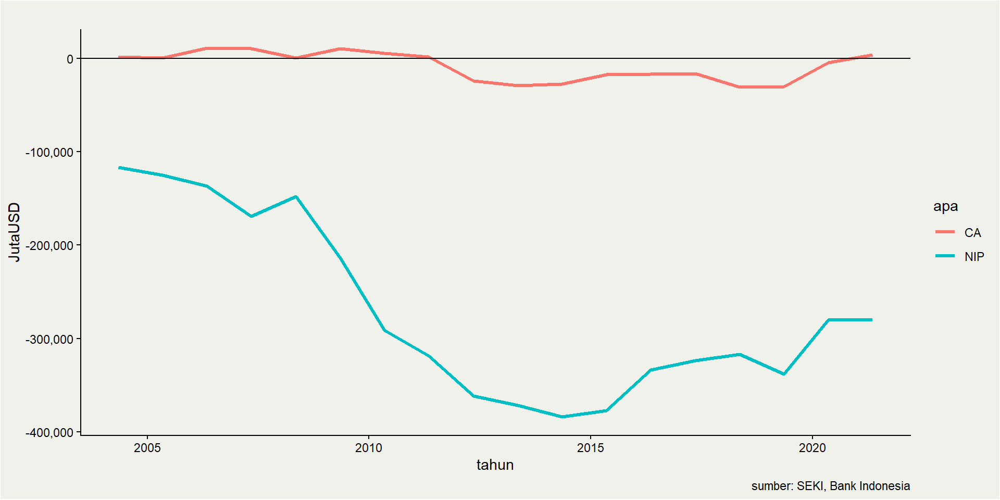
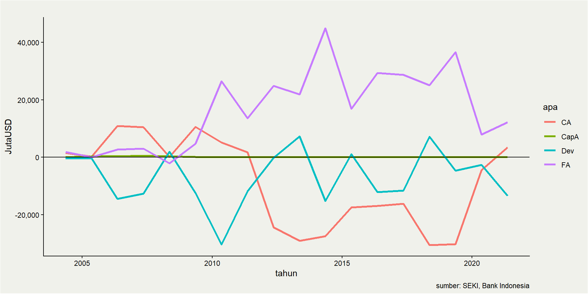

Balance of Payment & National Income
ECES905205 pertemuan 10
Invalid Date
Trade process
Sejauh ini kita menggunakan analisis riil dalam trade:
Kita akan memasukan prinsip trade imbalance dan monetary ke dalam perdagangan internasional.
National income->measure kebahagiaan penduduk secara umum.
Produk Nasional Bruto
Gross National Product (GNP) atau Produk Nasional Bruto (PNB): total nilai produksi oleh penduduk suatu negara di manapun ia berada.
sebagai ukuran kebahagiaan karena dapat dihitung dari konsumsi.
ukuran pendapatan karena dihasilkan oleh kapital, labor dan faktor lainnya.
Komponen GNP: konsumsi, investasi, belanja pemerintah, current account.
\[
Y_t=C_t+I_t+G_t+(X_t-M_t)
\]
Produk Domestik Bruto
Gross Domestic Product (GDP) atau Produk Domestik Bruto (PDB): total nilai produksi oleh suatu negara di wilayahnya, siapapun yang mengerjakan.
PDB = PNB - payments from foreign countries + payments to foreign countries.
Gaji eksekutif Toyota Indonesia: masuk ke PDB Indonesia, bukan PDB Jepang, tapi ada di PNB Jepang dan bukan PNB Indonesia.
Lebih gampang ngitung PDB daripada PNB, not differ significantly anyway (for some econs).
PDB Indonesia

The larger the better?
Kaltara memiliki PDB per kapita yang tinggi. Lebih tinggi daripada Sabah.
Namun, gaya hidup masyarakatnya tidak se-mewah masyarakat Sabah.
Jawabannya: Kaltara adalah net-eksportir dengan konsumsi domestik yang sangat rendah.
Current account
\[
CA = X - M
\]
Sejauh ini, model kita selalu menganalisis dengan CA=0.
Pada kenyataannya, CA=0 jarang terjadi.
Current Account
\(X>M=\) current account surplus, \(X<M=\) current account deficit.
CA dunia selalu balance: surplus di 1 negara akan dibarengi dengan defisit di setidaknya 1 negara.
Negara yang defisit berarti membeli barang tanpa membayar \(\rightarrow\) ngutang.
- Deficit CA \(\rightarrow\) net investment position minus.
Negara yang surplus berarti memberi barang tanpa dibayar \(\rightarrow\) piutang.
CA can’t always be surplus nor deficit (in theory): intertemporal trade!
CA & Saving
di closed economy, \(S=Y-C-G=I\)
di open econ, \(S=I+X-M=I+CA\)
Di open economy, saving dapat dilakukan di dalam negeri DAN di luar negeri.
Demikian pula investment: kekurangan modal domestik? Manfaatkan foreign capital market!
Saving juga bisa terjadi di govt jika T>G!
Balance of Payment
Banyak yang suka salah paham dengan BoP (Neraca Pembayaran)
Ada yang inget debit dan kredit?
4 komposisi neraca pembayaran:
Transaksi berjalan (current account)
Transaksi finansial (financial account)
Transaksi modal (capital account)
Cadangan devisa
Transaksi berjalan
Transaksi berjalan: trade in goods & services serta net income transfer.
Impor -> debit di Indo (karena IDR keluar), ekspor -> kredit.
Jika X=M berarti debit=kredit, CA=0.
Termasuk primary income: pembayaran bunga utang, deviden FDI, maupun gaji pegawai asing.
Termasuk secondary income: transfer lainnya (hadiah, misalnya).
Cadangan devisa
Cadangan Devisa adalah aset milik BI. Bergerak sesuai intervensi BI di pasar uang / securities.
Bank sentral seringkali intervensi untuk kepentingan domestik: mengatur uang beredar dan menjaga nilai mata uang domestik relatif terhadap mata uang asing.
Ketika BI menambah cadev dolarnya, BI mengambil dari market: beli dolar punya eksportir pakai IDR.
Ada yang menaruh aktivitas bank sentral ke financial account, tapi di IDN berdiri sendiri.
Transaksi modal
Transaksi modal: transaksi aset yang tidak ada di finansial:
copyright, trademark, debt forgiveness
biasanya angkanya sangat-sangat kecil
Setiap transaksi antar negara akan masuk BoP 2x: 1x di kredit, 1x di debit. Dan pasti balance.
Ilustrasi BoP
a modification from an example from RBA
Eva sell shoes in bulk to his friend in Australia. Her friend pays with letter of credit credit, transferring money from her bank to Eva’s bank. The price is Rp 100,000,000.
Desy goes on Holiday to Singapore and spend Rp20,000,000. She pays for the holiday with his saving account in Indonesia.
Gita buys Alphabet’s stock in NYSE using her Indonesian bank account. The amount is Rp 50,000,000.
Ilustrasi BoP
Simplified Balance of Payment of E-D-G
| Trade balance |
|
|
|
| - Goods |
100m(E) |
|
100m |
| - Services |
|
-20m (D) |
-20m |
| Current account |
100m |
-20m |
80m |
| Portfolio investment |
|
-50m (G) |
-50m |
| Other investment |
20m (D) |
-100m (E) |
-80m |
|
50m (G) |
|
|
| Financial account |
70m |
-150m |
|
| Balance of Payment |
170m |
-170m |
0m |
Neraca Pembayaran IDN

Trade and BoP
Ketika sebuah negara melakukan ekspor (kredit), maka debitnya:
Jika uangnya dibelikan barang impor, CA akan balance.
Jika uangnya ditabung, maka CA akan diseimbangkan oleh FA.
Jika uangnya diserap oleh BI, maka CA diseimbangkan oleh cadev.
2 opsi terakhir will be likelier in the presence of import restrictions.
Intervensi BI mempengaruhi trade
Trade and BoP
BoP juga menunjukkan sumber dana impor (debit):
- Standard theory: dari devisa ekspor (CA akan balance).
Jika CA defisit, berarti kelebihan impor dibiayai oleh akun lain:
CAD lumrah di negara yang sedang mengejar investasi asing.
Investment and BoP
Alasan utama sebuah negara mengejar investasi asing:
Hal ini wajar jika potensi pertumbuhannya tinggi (biasanya negara berkembang).
Mencegah CAD via trade mengakibatkan akumulasi kapital yang tidak efisien:
Trade dan BoP
CAD Indonesia increasingly is contributed by net primary income.
kemungkinan bukan hanya gaji outsource expat, tapi juga income dari FDI.
Inilah kenapa FDI perlu masuk sektor ekspor.
Inilah kenapa sangat urgent bagi Indonesia untuk transformasi struktur ekonominya:
yg jelas, trade dan investment are two sides of the same coin!
Global CA imbalance
Jika ada negara yang CA defisit, maka ada negara lain yang CA surplus (nalangin).
Artinya, CA seluruh dunia jika dijumlah harusnya seimbang.
Siapa yang surplus siapa yang defisit?
- alias, siapa net lender, siapa net borrower?
Global current account
overall global CA is surplus, potentially amid trade in services and digital economy prominance.
Chinese underinvoicing is also a potential (see Brad Setser exploration on Chinese CB-customs difference)
Methodological problem more prominent in investment/primary income transfers.
Demand for money
Next week kita akan bicarakan soal permintaan mata uang.
Bahwa mata uang didorong oleh kemampuannya untuk membeli tidak hanya barang dan jasa, tetapi juga aset finansial.